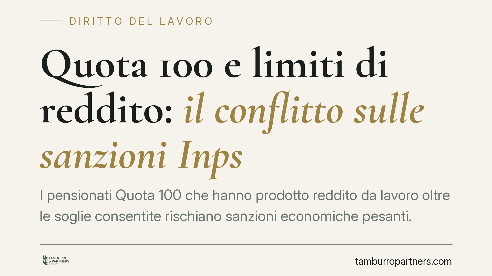

Quota 100 e limiti di reddito: il conflitto sulle sanzioni Inps
I pensionati Quota 100 che hanno prodotto reddito da lavoro oltre le soglie consentite rischiano sanzioni economiche pesanti. Ma l'entità del taglio non è chiara: la Corte d'appello di Milano lo limita ai mesi interessati, la Corte dei conti lo estende all'intera annualità. Un contrasto che espone chi ha sbagliato a conseguenze molto diverse, in attesa della Cassazione.

Il fatto
Quota 100 ha consentito, tra il 2019 e il 2021, di andare in pensione con 62 anni di età e 38 di contributi. La misura, però, imponeva un vincolo preciso: divieto di cumulare la pensione con redditi da lavoro, salvo il lavoro autonomo occasionale entro 5.000 euro lordi annui.
Chi ha superato quel tetto ha violato la condizione di legge. La domanda, oggi al centro di un contenzioso diffuso, riguarda le conseguenze: l'Inps deve trattenere la pensione solo per i mesi in cui il reddito è stato prodotto, oppure per l'intera annualità?
Sulla risposta i giudici si dividono. La Corte d'appello di Milano ha applicato una lettura restrittiva, limitando la decurtazione ai mesi effettivamente interessati dal reddito. La Corte dei conti, competente sui profili di danno erariale, ha invece sostenuto il taglio dell'intero anno. Due orientamenti opposti, con effetti economici molto diversi per il pensionato.
Inquadramento normativo
La norma di riferimento è l'articolo 14, comma 3, del Decreto legge 4/2019 (convertito nella legge 26/2019). La disposizione prevede che la pensione Quota 100 "non è cumulabile" con i redditi da lavoro dipendente o autonomo, con la sola eccezione del lavoro autonomo occasionale nel limite di 5.000 euro lordi annui.
Il problema è che il testo dice cosa è vietato, ma non chiarisce con precisione come opera la sanzione quando il divieto viene violato. Il termine "incumulabilità" può essere letto in due modi. Se lo si intende come regola riferita all'intero periodo annuale, la conseguenza è la perdita della pensione per tutto l'anno. Se lo si intende come divieto operante mese per mese, la trattenuta colpisce solo i periodi di effettiva sovrapposizione tra pensione e reddito.
È un caso classico di norma sanzionatoria ambigua: proprio perché incide su un diritto patrimoniale, dovrebbe essere interpretata in modo tassativo e prevedibile. La spaccatura tra giurisdizione ordinaria (giudice del lavoro) e giurisdizione contabile (Corte dei conti) aggrava l'incertezza, perché i due plessi seguono logiche diverse: tutela del rapporto previdenziale l'una, recupero del danno pubblico l'altra.
Implicazioni pratiche
Per il pensionato la differenza è concreta e pesante. Ipotizziamo una pensione mensile di 1.500 euro e un reddito da lavoro prodotto in tre mesi. Con l'interpretazione milanese la trattenuta riguarda circa 4.500 euro; con quella della Corte dei conti l'intera annualità, quindi circa 19.500 euro. Lo stesso comportamento produce sanzioni che differiscono di anni di risparmi.
Chi ha ricevuto una richiesta di restituzione dall'Inps si trova quindi in una posizione delicata: l'esito del ricorso dipende, oggi, anche dal giudice competente e dall'orientamento territoriale. Finché la Cassazione non fisserà un principio uniforme, la partita resta aperta.
Attenzione anche ai termini: le richieste di recupero seguono precise scadenze di impugnazione. Lasciar decorrere i termini significa consolidare la pretesa dell'ente, anche quando fondata su un'interpretazione poi superata.
Cosa fare in concreto
- Verificate i redditi dichiarati nel periodo di fruizione di Quota 100 e ricostruite mese per mese eventuali sovrapposizioni con la pensione.
- Non ignorate la comunicazione Inps: individuate subito il termine per proporre ricorso amministrativo o giudiziale ed evitate decadenze.
- Distinguete la natura del reddito: il lavoro autonomo occasionale entro 5.000 euro annui resta ammesso e va documentato correttamente.
- Valutate l'impugnazione alla luce dell'orientamento più favorevole, richiamando la lettura che limita la sanzione ai soli mesi interessati.
- Conservate ogni documento su compensi, fatture e certificazioni fiscali: la ricostruzione temporale è decisiva per contenere la trattenuta.
In un quadro così instabile, la scelta tra restituire, contestare o attendere la pronuncia della Cassazione va calibrata sul singolo caso. Consigliamo di analizzare per tempo la propria posizione, senza presumere che l'importo richiesto sia definitivo.
---
Contributo informativo a cura di Tamburro & Partners - Avv. Giuseppe Tamburro. Non costituisce parere legale.
Ogni storia di lavoro ha i suoi tempi.
Se gestisci HR e vuoi un confronto su contenzioso, ispezioni o licenziamenti, scrivi allo studio. Ti rispondiamo entro un giorno lavorativo.